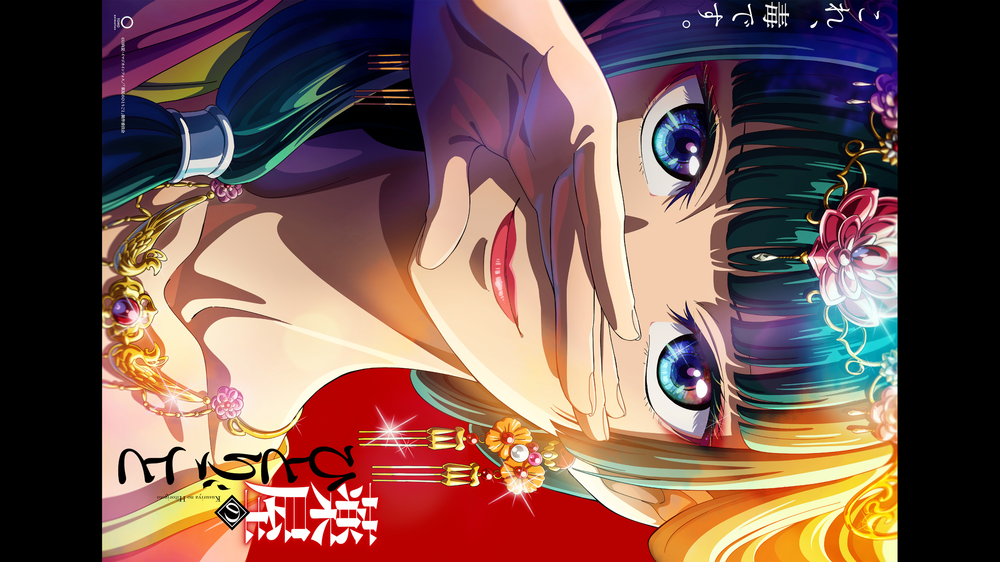

Introduction
This page is meant to be treated as a follow-up to this scaler comparison done with ImageMagick. I'm only going to talk about niche topics here, so just refer to that other page if you only want to read about scalers.
Upsampling Shaders
The mpv community has written several meme shaders you can use to upsample video in real time, and the rationale is that they can potentially achieve higher quality than the built-in methods. I still do not have a good way of
automating mpv tests and therefore I'll have to stick to a single test image, which is still going to be violet.png just because I'm familiarised with it. If this is your first time reading these posts, this is what violet.png looks like:

The small number of samples under test makes this very unscientific, but it is what it is.
Upsampling Methodology
The following shaders were "benchmarked":
I've also added polar Lanczos to the mix just to have a reference point, but feel free to send me any other shaders you would like to get scored. Also note that the Anime4K author recommends using multiple shaders together, but I'm only interested in the upscaling CNNs here.
The test image is downsampled with:
magick convert violet.png -colorspace rgb -filter box -resize 50% -colorspace srgb downscaled.png
It is then converted to grayscale with:
magick convert downscaled.png -colorspace gray downscaled.png
We need to convert them to grayscale because some of these shaders do not have RGB support.
The images were then upsampled back with:
mpv --no-config --vo=gpu-next --no-hidpi-window-scale --window-scale=2.0 --pause=yes --screenshot-format=png --sigmoid-upscaling --deband=no --dither-depth=no --screenshot-high-bit-depth=no --glsl-shader="path/to/meme/shader" downscaled.png
Upsampling Results
| Shader/Filter | MAE | PSNR | SSIM | MS-SSIM | MAE (N) | PSNR (N) | SSIM (N) | MS-SSIM (N) | Mean | ||
| FSRCNNX_x2_8-0-4-1 | 0.0038 | 40.9503 | 0.9882 | 0.9987 | 1.0000 | 1.0000 | 1.0000 | 1.0000 | 1.0000 | ||
| ravu-zoom-ar-r3 | 0.0038 | 40.1300 | 0.9869 | 0.9985 | 0.9695 | 0.8437 | 0.8911 | 0.8769 | 0.8953 | ||
| FSRCNNX_x2_16-0-4-1 | 0.0040 | 39.9168 | 0.9873 | 0.9984 | 0.8801 | 0.8030 | 0.9247 | 0.8541 | 0.8655 | ||
| ravu-zoom-ar-r2 | 0.0040 | 39.7097 | 0.9860 | 0.9984 | 0.9049 | 0.7635 | 0.8079 | 0.8666 | 0.8357 | ||
| FSR | 0.0051 | 39.0008 | 0.9817 | 0.9981 | 0.3916 | 0.6284 | 0.4552 | 0.6647 | 0.5350 | ||
| polar_lanczos | 0.0050 | 37.9718 | 0.9806 | 0.9980 | 0.4426 | 0.4323 | 0.3575 | 0.5797 | 0.4530 | ||
| Anime4K_Upscale_CNN_x2_S | 0.0054 | 36.7883 | 0.9795 | 0.9974 | 0.2346 | 0.2068 | 0.2677 | 0.2762 | 0.2463 | ||
| Anime4K_Upscale_CNN_x2_VL | 0.0055 | 36.1490 | 0.9794 | 0.9971 | 0.2006 | 0.0849 | 0.2564 | 0.0930 | 0.1587 | ||
| Anime4K_Upscale_CNN_x2_UL | 0.0056 | 35.9095 | 0.9790 | 0.9971 | 0.1788 | 0.0393 | 0.2300 | 0.0561 | 0.1260 | ||
| Anime4K_Upscale_CNN_x2_L | 0.0058 | 35.7035 | 0.9772 | 0.9972 | 0.0874 | 0.0000 | 0.0768 | 0.1609 | 0.0813 | ||
| Anime4K_Upscale_CNN_x2_M | 0.0060 | 35.7087 | 0.9763 | 0.9970 | 0.0000 | 0.0010 | 0.0000 | 0.0000 | 0.0002 |
Upsampling Commentary
The funniest thing about these results is that, according to distortion metrics, Anime4K is actually worse at "recreating the ground truth" than polar Lanczos. The problem seems to be that the shader is too sharp, it does not only ring but also makes the lines thinner. This isn't necessarily bad depending on how blurry your source is, but my test image here isn't blurry at all.
The slower variant of FSRCNNX is also scored lower than its smaller sibling, presumably for the same reason. I don't think igv trained these networks with images that had been downsampled in linear light, so that's probably part of the problem.
The overly-sharp shaders would probably do much better on perceptual metrics, I'll evaluate whether adding a few of them to the benchmarking script makes sense on a later date.
It's nice to see that bjin came back from the dead with gold. ravu-zoom-ar-r3 performs much better than its previous iterations and it's also free of the half-pixel shift problem.
In any case, if you were looking for a doubler FSRCNNX_x2_8-0-4-1 is probably a safe bet. It was the best scoring shader on all 4 distortion metrics.
Chroma Shaders
Using shaders to upsample chroma is an old meme, as igv ported Shiandow's KrigBilateral to mpv years ago. KrigBilateral finds the correlation between luma and chroma, and then maps the missing values based on that. You can read more about it here.
There's a different technique, usually called Joint or Cross Bilateral, that simply uses luma as an extra weighting factor. In short, chromatic information from pixels with similar luminosities is preferred. I've written a shader that implements this idea mostly to learn GLSL, but it ended up being quite useful as it's much faster than KrigBilateral while still keeping a clear lead over classic methods.
In any case, my goal here is to compare these chroma shaders against polar Lanczos, which I'm using as a reference poing.
Chroma Methodology
This test is a little different and it requires a slightly more elaborate process. The first problem with this is that, with real video content, we rarely get a 4:4:4 copy. This means that we generally don't have a reference point to work with, so we have to create one on our own.
I've semi-arbitrarily decided to use a downsampled version of this danmachi fanart. This image is particularly good at showing the difference between these shaders because it's full of pixel-to-pixel chromatic deviations, specially in the red areas. I might change this to a different test image at a later date, but for now it'll do.
This is what the original test image looks like:

Two versions of the image were created using FFmpeg:
ffmpeg -i downscaled.png -pix_fmt yuv444p10le -c:v libx264 -preset placebo -qp 0 -an danmachi444.mp4
ffmpeg -i downscaled.png -pix_fmt yuv420p10le -c:v libx264 -preset placebo -qp 0 -an danmachi420.mp4
The idea here was creating (nearly) lossless variants with and without chroma subsampling.
The "reference" image was obtained by screenshotting "danmachi444.mp4" on mpv.
The images under test were obtained by screenshotting "danmachi420.mp4" on mpv using the various chroma resampling shaders.
mpv options remains the same with the exception that we don't need
Chroma Results
| Shader/Filter | MAE | PSNR | SSIM | MS-SSIM | MAE (N) | PSNR (N) | SSIM (N) | MS-SSIM (N) | Mean | ||
| krigbilateral | 0.0025 | 41.1124 | 0.9941 | 0.9994 | 1.0000 | 1.0000 | 1.0000 | 1.0000 | 1.0000 | ||
| FastBilateral | 0.0028 | 40.0376 | 0.9925 | 0.9991 | 0.5973 | 0.4479 | 0.4715 | 0.6175 | 0.5335 | ||
| JointBilateral | 0.0029 | 39.9786 | 0.9923 | 0.9990 | 0.4964 | 0.4176 | 0.4033 | 0.5301 | 0.4619 | ||
| polar_lanczos | 0.0032 | 39.1656 | 0.9911 | 0.9987 | 0.0000 | 0.0000 | 0.0000 | 0.0000 | 0.0000 |
Chroma Commentary
As expected, the bilateral filters are all capable of getting closer to the ground truth than polar Lanczos. KrigBilateral is the best scorer here, which was also expected given it's the slowest shader.
FastBilateral scoring higher than JointBilateral might seem weird at first, but at their default settings (with
My personal advice here is that there's little point in using JointBilateral over FastBilateral, even when it does better the difference is usually negligible. Krig is also better than both of them at the expense of being much slower to run (about an order of magnitude slower than FastBilateral), but if your hardware can handle it then that's a non-issue.
The table also shows us that, if you use polar Lanczos as the baseline, Joint/Fast Bilateral are pretty much half-way as good as KrigBilateral. The shaders would be much closer together in the final mean if I had included faster options such as bilinear and box, but there's little reason to use those to scale chroma unless you're really trying to save on resources.
The only other thing I'd like to point out here is that the difference between these 3 shaders and the built-in solutions gets bigger when you use luma prescalers, since they use luma information as a guide.
Antiring
Antiringing solutions is a topic that I hadn't covered in the previous iteration of this page, but now that we have more than a single option we can also compare them.
In short, antiringing filters attempt to remove overshoots generated by sharp resampling filters when they meet a sharp intensity delta. What is commonly referred to as ringing is simply consequential to the filter's impulse response.
The following image shows this very well:

The negative weights in the filter are there for it to be able to quickly respond to high-frequency transitions, but it makes the filter overshoot a little bit before reaching its final destination. The "intensity" of the ringing is directly related to the magnitude of the secondary lobes. The second lobe, which is almost always negative, is responsible for the overshooting in can see in this example, but filters with more lobes ring once per lobe, and the ringing can be "positive" as well (within the range set by the original pixels) with positive lobes. The "length" of the rings is directly related to the length of the lobes, which is why filters like polar Lanczos have "longer" rings (the zero crossings don't fall exactly at the integers, but rather slightly after them).
Antiring Methodology
The methodology here almost is equal to the one used for upsampling, with the only difference being that we have to include
AR is only really necessary when you're using sharp filters, it makes no sense alongside blurry filters because blurry filters don't ring hard enough for it to be noticeable. Polar Lanczos is a relatively blurry filter, and it's probably not the best candidate to test this with, however, it's also the most popular polar choice so using something else probably wouldn't be very useful to a lot of people... There are a few sharp memes that are worth trying with AR though if you feel adventurous, but enerally speaking I think orthogonal lanczos and polar lanczos are pretty balanced.
It's also worth mentioning that mpv uses different AR techniques for orthogonal and polar filters, but I'll name them both "_ar" for simplicity.
I'm including my AR shaders in this comparison because I think they're very good at keeping everything but the overshoots intact, which does create some weird artifacts with sharp transitions sometimes, specially if you use them at ludicrous scaling factors, but the output is generally clean enough on real content.
Antiring Results
| Filter | MAE | PSNR | SSIM | MS-SSIM | MAE (N) | PSNR (N) | SSIM (N) | MS-SSIM (N) | Mean | ||
| lanczos_pc4_100 | 0.0045 | 38.4763 | 0.9831 | 0.9985 | 1.0000 | 0.9917 | 1.0000 | 0.9052 | 0.9742 | ||
| lanczos_pc4_75 | 0.0046 | 38.4828 | 0.9830 | 0.9985 | 0.9595 | 0.9970 | 0.9820 | 0.9400 | 0.9696 | ||
| lanczos_pc4_50 | 0.0047 | 38.4633 | 0.9827 | 0.9986 | 0.8656 | 0.9810 | 0.9252 | 0.9708 | 0.9356 | ||
| lanczos_pc12_100 | 0.0046 | 38.4865 | 0.9827 | 0.9985 | 0.8785 | 1.0000 | 0.9247 | 0.9392 | 0.9356 | ||
| lanczos_pc12_75 | 0.0047 | 38.4782 | 0.9826 | 0.9986 | 0.8490 | 0.9932 | 0.9080 | 0.9606 | 0.9277 | ||
| lanczos_pc12_50 | 0.0047 | 38.4522 | 0.9824 | 0.9986 | 0.7875 | 0.9720 | 0.8652 | 0.9810 | 0.9014 | ||
| lanczos_ar_50 | 0.0047 | 38.3433 | 0.9826 | 0.9985 | 0.8445 | 0.8833 | 0.8959 | 0.9221 | 0.8864 | ||
| lanczos_ar_75 | 0.0046 | 38.2819 | 0.9827 | 0.9984 | 0.9069 | 0.8332 | 0.9150 | 0.8578 | 0.8782 | ||
| lanczos_ar_100 | 0.0046 | 38.1854 | 0.9826 | 0.9983 | 0.9200 | 0.7545 | 0.8971 | 0.7848 | 0.8391 | ||
| lanczos | 0.0048 | 38.3682 | 0.9819 | 0.9986 | 0.6477 | 0.9035 | 0.7435 | 1.0000 | 0.8237 | ||
| polar_lanczos_pc4_100 | 0.0048 | 38.0367 | 0.9817 | 0.9982 | 0.7189 | 0.6333 | 0.7049 | 0.6973 | 0.6886 | ||
| polar_lanczos_pc4_75 | 0.0048 | 38.0387 | 0.9816 | 0.9983 | 0.6737 | 0.6350 | 0.6829 | 0.7259 | 0.6794 | ||
| polar_lanczos_pc12_100 | 0.0049 | 38.0394 | 0.9813 | 0.9983 | 0.5989 | 0.6356 | 0.6284 | 0.7247 | 0.6469 | ||
| polar_lanczos_pc4_50 | 0.0049 | 38.0185 | 0.9813 | 0.9983 | 0.5775 | 0.6185 | 0.6235 | 0.7506 | 0.6425 | ||
| polar_lanczos_pc12_75 | 0.0049 | 38.0308 | 0.9812 | 0.9983 | 0.5668 | 0.6285 | 0.6100 | 0.7416 | 0.6367 | ||
| polar_lanczos_pc12_50 | 0.0049 | 38.0061 | 0.9810 | 0.9983 | 0.5011 | 0.6084 | 0.5641 | 0.7566 | 0.6076 | ||
| polar_lanczos | 0.0050 | 37.9266 | 0.9804 | 0.9983 | 0.3513 | 0.5436 | 0.4438 | 0.7677 | 0.5266 | ||
| polar_lanczos_ar_50 | 0.0050 | 37.7414 | 0.9805 | 0.9980 | 0.4390 | 0.3926 | 0.4499 | 0.5096 | 0.4478 | ||
| polar_lanczos_ar_75 | 0.0051 | 37.5336 | 0.9797 | 0.9977 | 0.3047 | 0.2232 | 0.2849 | 0.2863 | 0.2748 | ||
| polar_lanczos_ar_100 | 0.0053 | 37.2597 | 0.9783 | 0.9973 | 0.0000 | 0.0000 | 0.0000 | 0.0000 | 0.0000 |
Antiring Commentary
When it comes to the AR solutions we have available today, libplacebo's native AR is better at keeping gradients smooth at the expense of blurrying the image a little bit, which explains why Pixel Clipper scores higher than it.
mpv's native AR solution for orthogonal filters shouldn't blur anything though, and I believe PixelClipper is only scoring higher than it because mpv applies its antiring twice, once per orthogonal pass. This means that the second pass won't have access to the overshoots created by the first pass, which is theoretically a good thing but actually ends up hurting the filter's reconstruction quality. Pixel Clipper is only applied after scaling is done, so it's completely oblivious to the entire scaling process. It simply clamps the HR pixels to the intensity bounds set by the surrounding LR pixels.
I think this is pretty much a pick your poison kind of situation, though my judgement might be biased.
Downsampling Antiring
Pixel Clipper actually has a downsampling variant as well, which I believe is probably less broken than mpv's native
I'm only including orthogonal mitchell, catrom and spline36 and lanczos in this section, as these are the most popular choices for downsampling. The following image was used for the downsampling tests:

Downsampling Antiring Methodology
My current method to evaluate downsampling filters is to concede that at 0.5x linear light box is as good as it gets, since in this case we're just averaging 4 pixels together. We can't use box itself for other scaling factors though, so the aim is to find a filter that produces a similar result but is also usable at any other arbitrary scaling factor.
To eliminate any differences caused by how differently mpv and ImageMagick perform linear light conversion, the box reference was also obtained using mpv.
The images were basically generated using the following command:
mpv --no-config --vo=gpu-next --no-hidpi-window-scale --window-scale=0.5 --pause=yes --screenshot-format=png --linear-downscaling --correct-downscaling --deband=no --dither-depth=no --screenshot-high-bit-depth=no --dscale=filter --glsl-shader="PixelClipper_downscaling.glsl" higres.png
Downsampling Antiring Results
| Filter | MAE | PSNR | SSIM | MS-SSIM | MAE (N) | PSNR (N) | SSIM (N) | MS-SSIM (N) | Mean | ||
| catrom_pc | 0.0026 | 42.0780 | 0.9955 | 0.9996 | 1.0000 | 1.0000 | 1.0000 | 1.0000 | 1.0000 | ||
| lanczos_pc | 0.0027 | 42.0482 | 0.9950 | 0.9994 | 0.8790 | 0.9932 | 0.8957 | 0.8036 | 0.8929 | ||
| spline36_pc | 0.0028 | 41.8381 | 0.9949 | 0.9995 | 0.8468 | 0.9449 | 0.8750 | 0.8317 | 0.8746 | ||
| catrom | 0.0030 | 40.5637 | 0.9948 | 0.9994 | 0.7095 | 0.6523 | 0.8451 | 0.7859 | 0.7482 | ||
| spline36 | 0.0038 | 38.3021 | 0.9923 | 0.9991 | 0.0906 | 0.1329 | 0.3205 | 0.2044 | 0.1871 | ||
| mitchell_pc | 0.0038 | 38.1842 | 0.9908 | 0.9990 | 0.1057 | 0.1059 | 0.0135 | 0.0195 | 0.0612 | ||
| lanczos | 0.0039 | 37.7231 | 0.9917 | 0.9990 | 0.0000 | 0.0000 | 0.2069 | 0.0000 | 0.0517 | ||
| mitchell | 0.0038 | 38.1312 | 0.9907 | 0.9990 | 0.0669 | 0.0937 | 0.0000 | 0.0092 | 0.0425 |
Downsampling Antiring Commentary
The first thing we can see is that AR seems to be a net-positive in general. All filters scored higher with Pixel Clipper, with the sharpest filter in the comparison (Lanczos) seeing the biggest improvement.
Catrom is the highest scoring filter with and without AR, so it's easy to recommend this unless you really prefer the softer look of mitchell.
Mitchell itself also saw a small improvement with AR, but using AR with mitchell is completely unnecessary and you're unlikely to notice the difference.
Outro
I want to make it clear though that you shouldn't take the results as gospel. Mathematical image quality metrics do not always correlate perfectly with how humans perceive image quality, and your personal preference is entirely subjective. You should take this page as what it is, a research that produces numbers, but you should not take these numbers for granted before understanding what they actually mean.